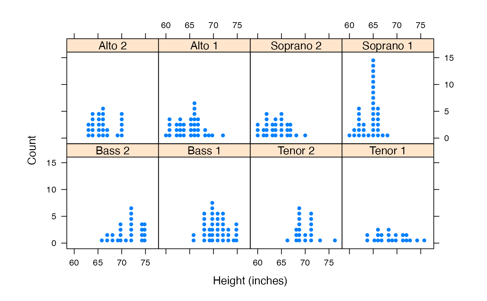

A high level function and panel function for producing a variant of a histogram called a dotplot.
dotPlot(x, breaks, ..., panel = panel.dotPlot) panel.dotPlot(x, breaks, equal.widths = TRUE, groups = NULL, nint = if (is.factor(x)) nlevels(x) else round(1.3 * log2(length(x)) + 4), pch, col, lty = trellis.par.get("dot.line")$lty, lwd = trellis.par.get("dot.line")$lwd, col.line = trellis.par.get("dot.line")$col, alpha = trellis.par.get("dot.symbol")$alpha, cex = 1, type = "count", ...)
| x | a vector of values or a formula |
|---|---|
| breaks, equal.widths, groups, pch, col, lty, lwd, col.line, type, alpha | as in |
| … | additional arguments |
| panel | a panel function |
| nint | the number of intervals to use |
| cex | a ratio by which to increase or decrease the dot size |
a trellis object
if (require(mosaicData)) { dotPlot( ~ age, data = HELPrct) dotPlot( ~ age, nint=42, data = HELPrct) dotPlot( ~ height | voice.part, data = singer, nint = 17, endpoints = c(59.5, 76.5), layout = c(4,2), aspect = 1, xlab = "Height (inches)") }